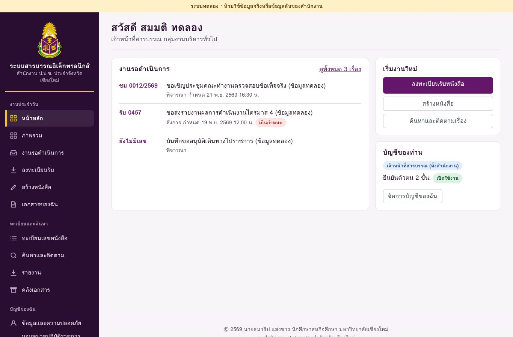
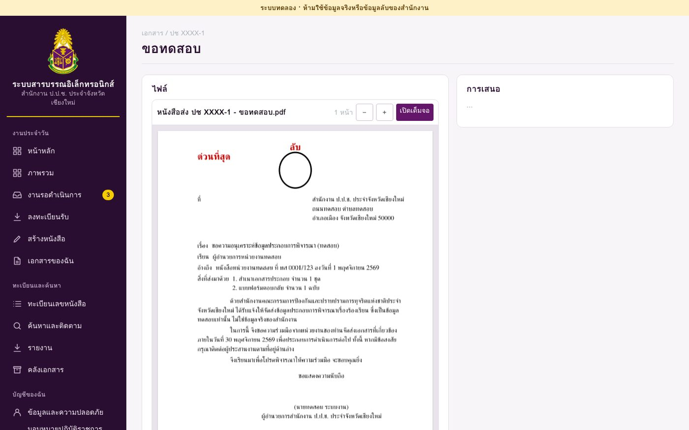
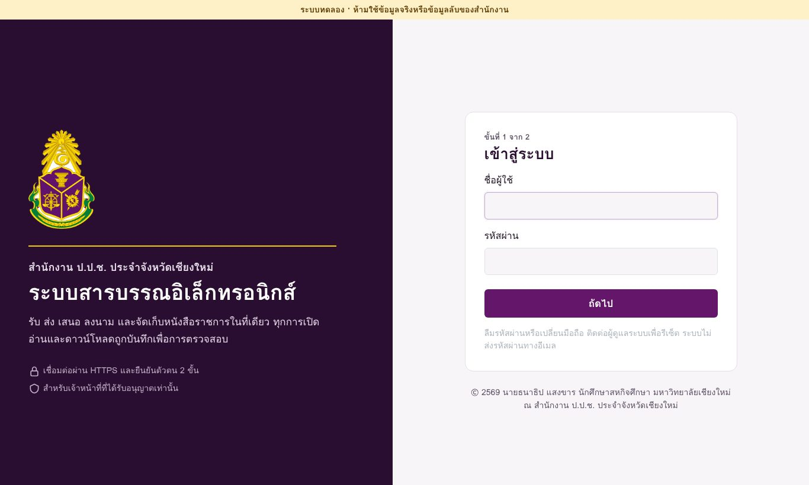

สำนักงาน ป.ป.ช. ประจำจังหวัดเชียงใหม่ · กลุ่มงานป้องกันการทุจริต
ระบบสารบรรณอิเล็กทรอนิกส์
รับ ส่ง เสนอ สั่งการ ลงนาม และจัดเก็บหนังสือราชการในที่เดียว ปลอดภัยตามชั้นความลับ และตรวจสอบย้อนหลังได้ทุกขั้น

หนังสือหนึ่งฉบับ ตั้งแต่รับเข้าจนจัดเก็บ
ทุกขั้นแจ้งเตือนผู้เกี่ยวข้องในระบบ และบันทึกลงประวัติเอกสาร ผู้พิจารณาส่งกลับแก้ไขได้ทุกขั้น
- รับ / สร้างลงทะเบียนรับ หรือสร้างหนังสือจากแม่แบบ ระบบออกเลขให้
- เสนอส่งตามเส้นทางการเสนอ ผู้พิจารณาเห็นในงานรอดำเนินการ
- สั่งการผู้บริหารพิมพ์สั่งการ/เกษียนลงบนหนังสือ
- ลงนามภาพลายมือชื่อ หรือลายมือชื่อดิจิทัล
- จัดเก็บเข้าคลังเอกสาร ค้นย้อนหลังได้
ความสามารถหลัก
ครอบคลุมงานสารบรรณตามระเบียบสำนักนายกรัฐมนตรีว่าด้วยงานสารบรรณ
ทะเบียนและเลขหนังสือ
ลงทะเบียนรับ ออกเลขอัตโนมัติไม่ซ้ำ ยกเลิกเลขพร้อมเหตุผล
สร้างหนังสือจากแม่แบบ
บันทึกข้อความ หนังสือภายนอก คำสั่ง ประกาศ ดาวน์โหลด PDF และ Word
เส้นทางการเสนอ
เสนอ ส่งกลับแก้ไข สั่งการ และมอบหมายปฏิบัติราชการแทน
สั่งการ/เกษียน และลงนาม
พิมพ์ลงบนหนังสือ เลือกสีหมึก ได้ไฟล์ฉบับเดียว
ลงปฏิทินจากหนังสือ
อ่านชื่องาน วันเวลา สถานที่จากไฟล์ (รวมภาพสแกนด้วย OCR ภาษาไทย) แล้วลง Google Calendar
ค้นหา รายงาน คลังเอกสาร
ติดตามว่าเรื่องอยู่ที่ใคร ส่งออกรายงาน Excel และ PDF
หน้าจอระบบ
เปิดเอกสารแล้วเห็นไฟล์ล่าสุดทันที ไม่ต้องกดเปิดไฟล์


ภาพจากระบบทดลองที่ใช้ข้อมูลสมมติ
ความปลอดภัย
ออกแบบให้ปลอดภัยตั้งแต่แรก ไม่ได้เพิ่มทีหลัง
ยืนยันตัวตน 2 ขั้น
รหัสผ่านและรหัสจากแอป Authenticator ล็อกเมื่อใส่ผิดหลายครั้ง
สิทธิ์ตามบทบาท
เห็นเฉพาะเอกสารของกลุ่มงานและชั้นความลับที่ได้รับอนุญาต
เข้ารหัสไฟล์
ไฟล์ทุกไฟล์เข้ารหัสก่อนเก็บ เปิดได้ผ่านระบบที่ตรวจสิทธิ์เท่านั้น
Audit Log แก้ไม่ได้
บันทึกทุกการกระทำต่อกันเป็นลูกโซ่ hash ตรวจได้ว่าไม่มีใครแก้หรือลบ
แยกหน้าที่
ผู้ดูแลระบบและผู้ตรวจสอบไม่เห็นเนื้อหาเอกสาร
HTTPS และ CSP
เข้ารหัสการเชื่อมต่อ ป้องกันสคริปต์แปลกปลอมและไฟล์ PDF อันตราย
เทคโนโลยี
ซอฟต์แวร์โอเพนซอร์สทั้งหมด ติดตั้งด้วย Docker
| ส่วน | ใช้ |
|---|---|
| Backend | Python, Django 5.2, PostgreSQL 16 |
| Frontend | Django templates, Bootstrap 5, ฟอนต์ Sarabun, PDF.js |
| เอกสาร | สร้าง PDF ภาษาไทย (ReportLab, Pillow, libthai), Word (python-docx), Excel (openpyxl), OCR (Tesseract) |
| ลายมือชื่อดิจิทัล | PDF signature (PKCS#7) ด้วย cryptography และ pypdf |
| การติดตั้ง | Docker Compose: web (Gunicorn), db (PostgreSQL), nginx (HTTPS) |
หน้านี้เป็นหน้าแนะนำโครงการ ตัวระบบมี backend (Django + ฐานข้อมูล) จึงต้องติดตั้งบน server ที่รัน Docker ได้ เช่น คอมพิวเตอร์ในสำนักงาน หรือ server เช่า ดูคู่มือติดตั้ง